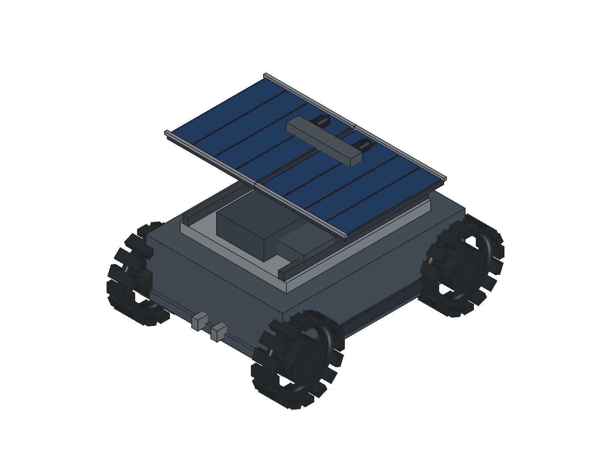
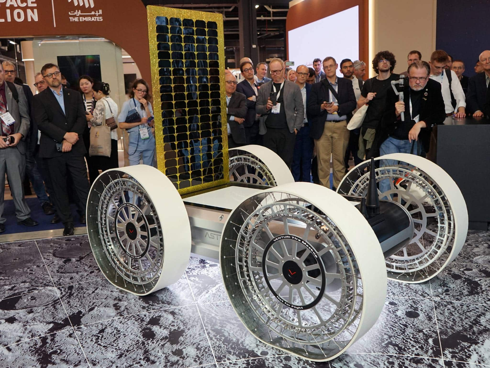
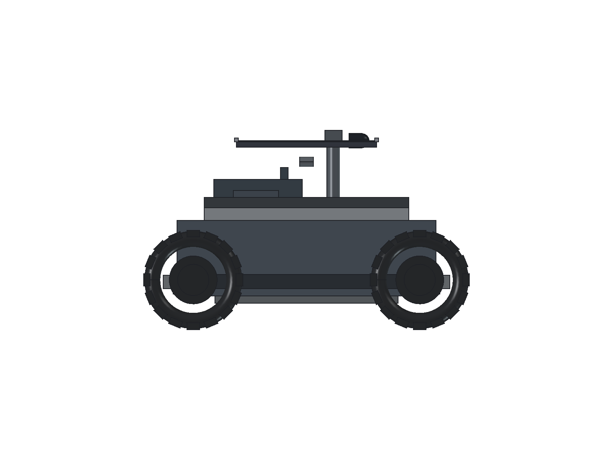
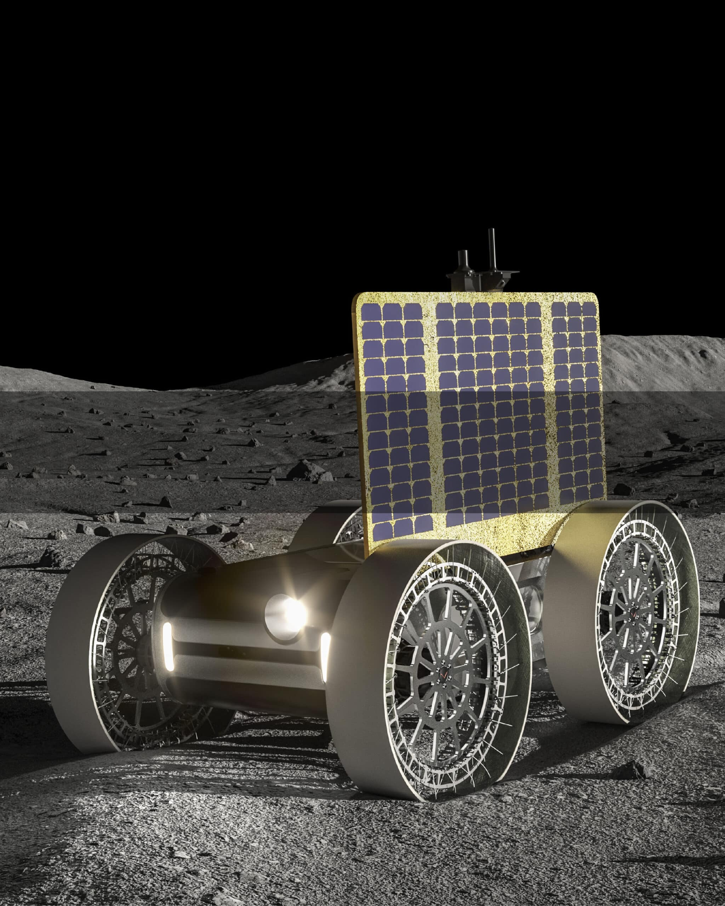
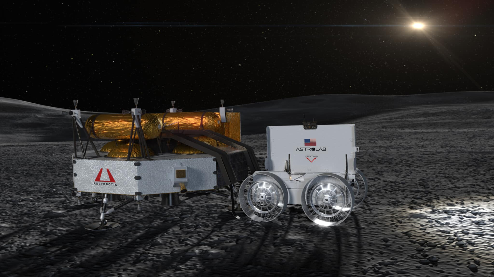
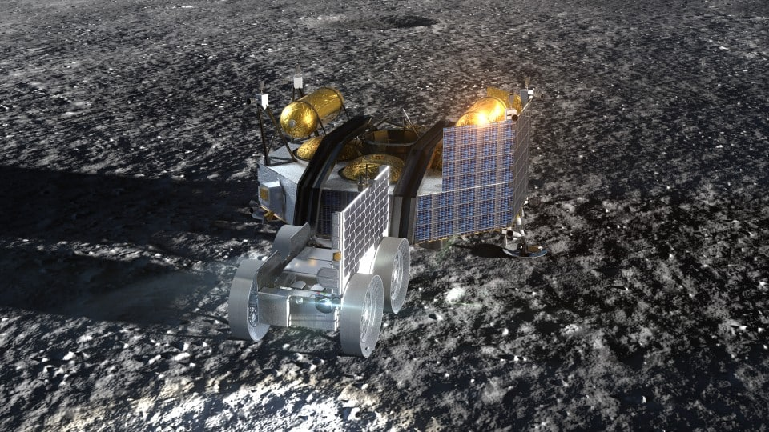

Four named wheels and organized components are useful. The canopy, bulky body and lugged wheels diverge from the references.

Upright cell array, open spoke/web wheels and lower equipment body. Wheels are labelled “Not for flight”. Source

Native geometry audit: 737.5 mm gap between each suspension arm and knuckle; wheel/chassis overlap; mast/camera intersections with array.

Shows upright array and fine wheel structure. Appearance does not establish flight dimensions, materials or mechanism limits. Source

White reverse face of upright array. Source

Useful for array/body arrangement; do not take dimensions from perspective. Source